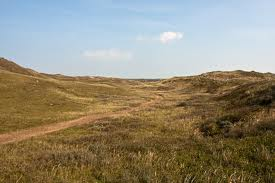

Back
Duinen en Lage Land Texel

De Duinen van Texel kennen een rijke schakering van zandstranden, kustduinen, natte valleien, meertjes, slikken, kwelders en duinbossen. Unieke elementen hierin zijn de gebieden de Slufter, het duinmeertje de Muy en de strandvlakte De Hors. Een deel van De Hors is in gebruik als militair oefenterrein (landingen e.d.). In de duinmeren De Muy en De Geul broeden lepelaars. Rond de Slufter en de Eijerlandse Duinen broeden eidereenden. In de Slufter nestelen ook dwergsterns. Er zijn een aantal broedkolonies van de kleine mantelmeeuw in het gebied, vaak samen met zilvermeeuw (onder andere in De Geul, De Slufter en de Muy). Verspreid in het gebied broeden ook blauwe kiekendief, bruine kiekendief, velduil, roodborsttapuit en tapuit.
Blauwe Kiekendief
Bontbekplevier
Bruine Kiekendief
Dwergstern
Kleine Mantelmeeuw
Lepelaar
Roerdomp
Strandplevier
Tapuit
Velduil